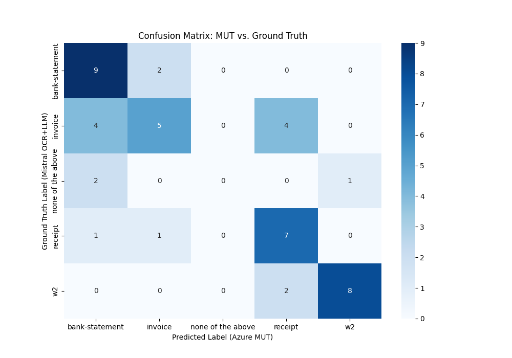
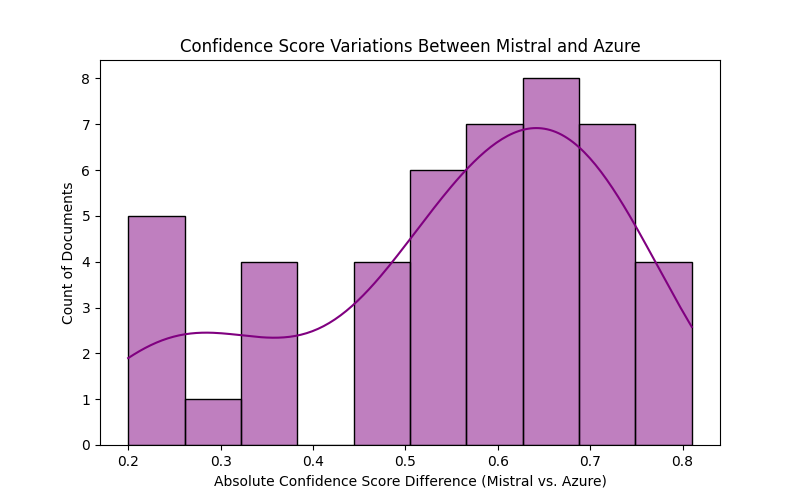

MUT correctly classified 29 out of 46 documents.
Overall Accuracy: 63.04%
Best Performance: W2 (F1-score: 0.84)
Worst Performance: None of the above (F1-score: 0.00)
| Document Type | Precision | Recall | F1-Score | Support |
|---|---|---|---|---|
| Bank-statement | 0.56 | 0.82 | 0.67 | 11.0 |
| Invoice | 0.62 | 0.38 | 0.48 | 13.0 |
| None of the above | 0.00 | 0.00 | 0.00 | 3.0 |
| Receipt | 0.54 | 0.78 | 0.64 | 9.0 |
| W2 | 0.89 | 0.80 | 0.84 | 10.0 |
Overall, there are 9 low-confidence MUT predictions (less than or equal to 0.25). The highest average MUT confidence is observed for W2.


An ideal confusion matrix would have high values on the diagonal (correct classifications) and low values elsewhere (misclassifications).
Predicted
---------------------
Invoice Receipt W2 Bank
Actual | Invoice 10 0 0 0
| Receipt 0 10 0 0
| W2 0 0 10 0
| Bank 0 0 0 10
Perfect Model - All correct classifications are along the diagonal, with no misclassifications.
Predicted
---------------------
Bank-statement Invoice None of the above Receipt W2
Actual | Bank-statement 9 2 0 0 0
Actual | Invoice 4 5 0 4 0
Actual | None of the above 2 0 0 0 1
Actual | Receipt 1 1 0 7 0
Actual | W2 0 0 0 2 8
Dynamic Insights: Compare the counts along the diagonal with the off-diagonal values to understand misclassifications.
Ideally, Mistral and Azure should have very similar confidence scores for each document. The histogram bars should be concentrated around 0.0 - 0.2 (small differences).
|************* |***************** |******************* |************* |***** |* ---------------------------- 0.0 0.2 0.4 0.6 0.8 (Small Confidence Differences - Good Agreement)
| |****** |********** |*************** | ---------------------------- 0.0 0.2 0.4 0.6 0.8
Dynamic Insights: Larger bars toward higher differences indicate greater disagreement between models.